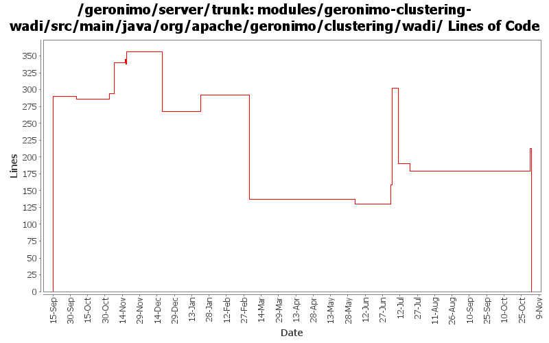

[root]/modules/geronimo-clustering-wadi/src/main/java/org/apache/geronimo/clustering/wadi

| Author | Changes | Lines of Code | Lines per Change |
|---|---|---|---|
| Totals | 96 (100.0%) | 966 (100.0%) | 10.0 |
| gdamour | 47 (49.0%) | 885 (91.6%) | 18.8 |
| jlaskowski | 8 (8.3%) | 48 (5.0%) | 6.0 |
| vamsic007 | 9 (9.4%) | 18 (1.9%) | 2.0 |
| kevan | 9 (9.4%) | 12 (1.2%) | 1.3 |
| rickmcguire | 2 (2.1%) | 2 (0.2%) | 1.0 |
| jdillon | 1 (1.0%) | 1 (0.1%) | 1.0 |
| prasad | 20 (20.8%) | 0 (0.0%) | 0.0 |
GERONIMO-3565. Modules distributed amongst framework/modules and plugins
0 lines of code changed in 20 files:
Move to WADI version 2.0-M7 which provides a delta replication mechanism.
This fixes GERONIMO-3578 - Delta Replication of HttpSessions - Jetty
Clustered Web-Applications
Note: the aspectjrt JAR is now included in the assembly. LICENSE and
NOTICE have been updated accordingly as per Kevan's instructions.
38 lines of code changed in 5 files:
Drop ReplicationManager and ReplicaStorage GBeans. WADI's API has slightly
changed and it is no more possible to plug-in such strategies via this approach.
Pass in the ClassLoader of the configuration which is defining the
BasicWADISessionManager GBean to the WADI StackContext. This ClassLoader
is used to unserialize replicated sessions. Previously, replicated sessions
were not unserialized by their storages. They are no fully re-instantiated so
that field or method level changes can be applied to them.
10 lines of code changed in 1 file:
* Add a Cluster GBean such that we can implement cluster aware services, for
instance a cluster aware deployer;
* When a clustered Web-application is deployed, we now deploy it to a Cluster
by specifying its name. The former mechanism was to deploy it to a
DispatcherHolder;
* Add Node.getJMXConnector such that clients can get a JMXConnector connected
to the target Node instance. Host and port connection details of this
JMXConnector are retrieved via the clustered service proxying/invocation of
WADI; and
* Use a configuration substitution mechanism to simplify the configuration of
node names.
53 lines of code changed in 11 files:
Add SessionManager.getRemoteNodes so that clients know which Nodes are hosting the sessions managed by a clustered
SessionManager.
Provide a WADI implementation of this contract.
14 lines of code changed in 1 file:
Add Cluster and ClusterListener to the clustering API. Cluster represents a cluster, i.e. a set of Nodes. Clients
can register a ClusterListener with a Cluster to be notified when Nodes are joining or leaving the Cluster.
Provide a WADI implementation of these contracts.
129 lines of code changed in 1 file:
Move to WADI 2.0-SNAPSHOT and make the relevant changes to enable the
WADI administration console.
32 lines of code changed in 1 file:
GERONIMO-3246 Cleanup exception handling so stack traces for first failures are not discarded.
2 lines of code changed in 2 files:
Pass a null String to fix the build. This is a temporary fix the time to figure out how to push the correct version of WADI 2.0-M4 to
http://repo1.maven.org/maven2.
1 lines of code changed in 1 file:
move to WADI 2.0-M4
3 lines of code changed in 1 file:
r6720@Bliss: jason | 2007-03-20 01:48:14 -0700
(GERONIMO-2995) Replace backport-util-concurrent usage with java.util.concurrent
1 lines of code changed in 1 file:
Use interface instead of implementation.
5 lines of code changed in 2 files:
* Move to latest WADI API: many classes have been repackaged such that it
is easier to comprehend the WADI code base.
* WADI has now in-built support for notification of inbound and outbound
session migrations. This means, that we can get ride of MotionTracker.
* WADI now uses the same Tribes version than the one recently defined
to add clustering to Tomcat.
27 lines of code changed in 3 files:
* Add SessionListener.notifySessionDestruction: clients can now receive
callbacks when a Session is destroyed, e.g. when they expire.
* ClusteredSessionManager uses this callback to properly remove the
destroyed session from its internal storage.
* Sync code with the new WADI API.
This fixes GERONIMO-2764 - Clustered HttpSessions are not properly destroyed
during eviction.
28 lines of code changed in 1 file:
* Move to 2.0M3-SNAPSHOT version of WADI dependencies;
* Migrate BasicWADISessionManager to new WADI API;
* Move GBean definition of the session timeout before the clustering
configuration such that clustering builders can retrieve this
session timeout;
* Add Session.onEndAccess contract. This is a notification of the
session performed by clients when they are done with their
data accesses. Implementations can implement this method to queue a
replication; and
* Honor David J.'s TODOs in ClusteredSessionManager.
This fixes GERONIMO-2669 fix o.a.g.j.ClusteredSessionManager to match
changes in Jetty AbstractSessionManager
51 lines of code changed in 2 files:
modified svn properties
18 lines of code changed in 9 files:
GERONIMO-2537 Update the src headers in server/trunk/modules to be compliant with the new ASF src header and copyright policy (http://www.apache.org/legal/src-headers.html). I also did some cleanup of the src headers and tried to make them all a consistent format
12 lines of code changed in 9 files:
* GERONIMO-2470 - Add support for Session Replication
* Move to WADI release version 2.0M2.
49 lines of code changed in 2 files:
* Refresh code with recently deployed WADI snapshot; and
* Drop wadi-activecluster Dispatcher implementation.
84 lines of code changed in 3 files:
Partial fix for GERONIMO-2537 All Geronimo source files must be brought in line with the new ASF source header and copyright notice policy
The modules directory is supposed to be migrated. There're some issues with some files, but they'll be handled manually
48 lines of code changed in 8 files:
GERONIMO-2469 - Allow sharing of a single WADI group communication instance between multiple Web-app
Enable WADI ServiceSpace. Also, session timeout is also cascaded to WADISessionManager.
71 lines of code changed in 2 files:
GERONIMO-2163 - WADI Integration for Jetty
290 lines of code changed in 10 files: